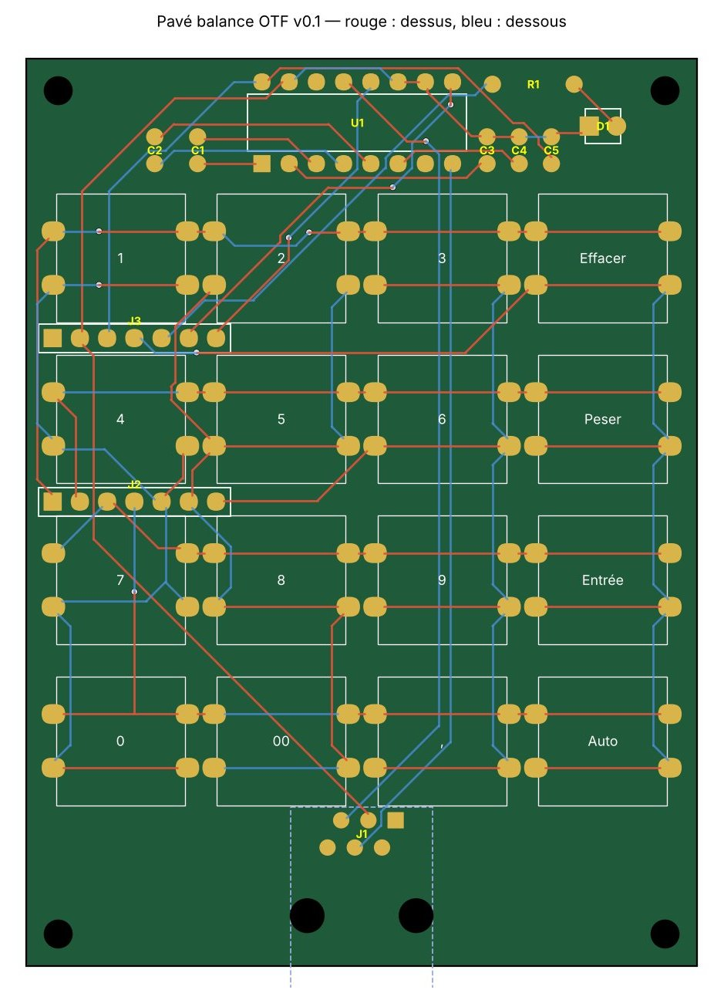
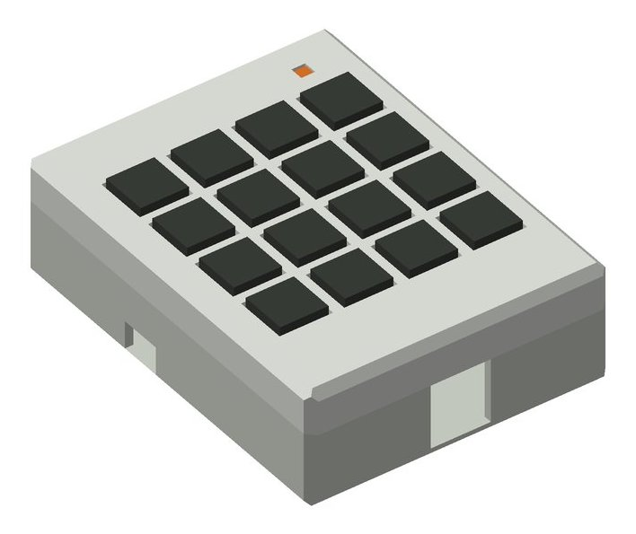
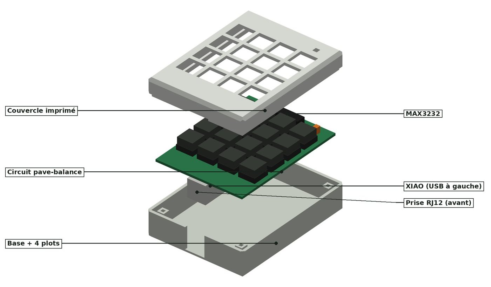

Un pavé numérique de 16 touches qui se branche en USB-C sur une tablette Android ou un iPad, comme un clavier. Pour les essais, une touche « Peser » tape le poids lu sur la balance Elicom S300FM.
Prototype non fabriqué, non testé. La saisie au clavier est la pratique normale. Le lien automatique balance → caisse (touches Peser et Auto) doit être certifié pour vendre au poids : réservé aux essais, sur une ferme de démonstration, jamais à la vente. L'auteur n'est pas responsable de l'usage qui en est fait.
Maquette
Le pavé, le boîtier et le circuit

Circuit 62,6 × 84,6 mm, 2 couches, entièrement routé. Rouge : pistes du dessus, bleu : pistes du dessous. Contrôle KiCad : 0 erreur.

Boîtier imprimé 70 × 92 × 28 mm, LED en haut à droite, prise RJ12 au milieu du bord avant.

Vue éclatée : couvercle, circuit posé sur 4 plots, XIAO suspendu dessous, prise USB-C sur le côté gauche.
Saisie normaleChiffres, double zéro, virgule, Effacer, Entrée : le pavé tape comme un clavier.
Peser (essai)Attend une pesée stable puis tape le poids, par exemple 1,245.
Auto (essai)Tape chaque nouvelle pesée stable, y compris quand on ajoute au panier sans revenir à zéro.
Android et iPadReconnu comme un clavier USB : aucune application ni Bluetooth à installer.
Liste d'achats
Les pièces à commander
Qté
Pièce
Détail à vérifier
Repère
1
Circuit imprimé pave-balance
Fichier pave-balance-gerbers.zip. Les fabricants en livrent 5 au minimum.
Les liens ouvrent une recherche AliExpress. Vérifie sur la fiche du produit choisi les cotes indiquées dans la colonne « Détail à vérifier ».
Outils : fer à souder réglable (330 à 350 °C) et étain fin de 0,8 mm avec flux, pince coupante, multimètre, pied à coulisse, petite planche d'essai (breadboard), tournevis, ordinateur, imprimante 3D ou service d'impression.
Générateur de programme
Le programme du XIAO, réglé pour ta tablette
Choisis les réglages, vérifie la disposition des touches, puis télécharge le programme. Il s'ouvre dans Arduino IDE (étape H).
Pas à pas
De la commande au marché, de A à Z
Compte deux à trois semaines de livraison et une demi-journée de montage. Les étapes sont dans l'ordre : chaque contrôle évite une erreur coûteuse à l'étape suivante.
A
Comprendre
Le pavé contient un petit ordinateur, le XIAO ESP32-S3. Branché en USB-C, la tablette le voit comme un clavier : chaque touche tape un caractère dans le champ sélectionné.
La balance envoie son poids en continu par sa prise RJ12. Le MAX3232 convertit ce signal pour le XIAO. Rien n'est jamais envoyé à la balance.
Lis l'avertissement en haut de page : Peser et Auto servent aux essais. Au marché, on tape le poids lu sur la balance.
B
Commander les pièces
Commande les pièces de la liste d'achats, sauf le circuit imprimé. On le commandera après les mesures de l'étape C.
Pour les boutons, prends des 12 × 12 mm avec un capuchon assorti, vendus ensemble si possible.
C
Mesurer avant de commander le circuit
XIAO : pique le XIAO, broches soudées ou simplement posées, sur la planche d'essai en enjambant la rainure centrale.
Les deux rangées de broches doivent être séparées de 6 trous (15,24 mm). Sinon, ne commande pas le circuit et signale-le.
Boutons : pose un capuchon sur un bouton et mesure la hauteur totale au pied à coulisse.
Entre 10,5 et 11,5 mm : le capuchon dépassera de 1 à 2 mm du couvercle. En dessous, il restera enfoncé ; au-dessus, il dépassera trop.
Prise RJ12 : compare le plan du vendeur au dessin de l'empreinte Amphenol 54601 : 6 pattes en quinconce et 2 tétons en plastique.
D
Commander le circuit
Télécharge pave-balance-gerbers.zip (rubrique Fichiers). Ne le décompresse pas.
Chez le fabricant (JLCPCB, PCBWay, Aisler…), choisis « devis de circuit » et dépose le ZIP. Le site affiche le circuit : vérifie qu'il mesure 62,6 × 84,6 mm.
Réglages : 2 couches, épaisseur 1,6 mm, finition HASL, quantité 5, couleur au choix, sans assemblage. Laisse le reste par défaut.
E
Imprimer le boîtier
Récupère boitier-base.stl et boitier-dessus.stl sur GitHub (rubrique Fichiers). La prise USB-C sort sur le côté gauche ; on la relie à la tablette par un câble court.
PETG ou PLA, couches de 0,2 mm, sans supports. Base posée à plat, couvercle retourné (dessus contre le plateau).
Emboîte les deux pièces à vide. Elles doivent se tenir sans forcer. Garde le boîtier ouvert jusqu'à l'étape L.
F
Souder, du plus bas au plus haut
Toutes les pièces se posent sur la face marquée « Pavé balance OTF v0.1 », sauf la prise RJ12 et le XIAO, qui se posent dessous. Après chaque soudure, coupe les pattes qui dépassent.
R1 (330 Ω), sans sens. Puis les 5 condensateurs C1 à C5, sans sens non plus.
Support DIP-16 à l'emplacement U1 : son encoche du côté de la pastille carrée (à gauche).
LED D1 : la patte longue (+) dans la pastille ronde, la patte courte (côté plat) dans la pastille carrée.
Les 16 boutons : enfonce chaque bouton jusqu'au bout, ses 4 pattes passent d'elles-mêmes. Soude les 4 pattes, bouton bien à plat.
Prise RJ12 : insère-la par le dessous, ouverture vers le bord avant, tétons dans les deux grands trous. Soude ses 6 pattes sur le dessus.
XIAO : soude d'abord les deux barrettes longues sur le XIAO, petit côté des broches dans le XIAO, puce vers le haut. Présente ensuite le XIAO sous le circuit, prise USB-C vers le bord gauche, les broches dans les rangées J2 et J3. Cale-le à environ 14 mm sous le circuit, puis soude les 14 broches sur le dessus.
Enfonce le MAX3232 dans son support, encoche du même côté que celle du support.
Contrôle au multimètre (mode bip) : aucun bip entre la broche 3V3 et la broche GND du XIAO. Regarde chaque soudure à la loupe : aucune goutte ne doit relier deux pastilles.
Menu Outils → Carte → Gestionnaire de cartes, cherche esp32, installe celui d'Espressif Systems.
Menu Outils → Carte → esp32 → XIAO_ESP32S3, puis Outils → USB Mode → USB-OTG (TinyUSB). Ce dernier réglage permet au XIAO de se présenter comme un clavier.
H
Charger le programme
Dans le générateur, choisis la langue du clavier de ta tablette et la façon de taper le poids, puis Télécharger le programme. Décompresse le ZIP : tu obtiens un dossier pave_balance.
Ouvre pave_balance.ino dans Arduino IDE. Branche le XIAO à l'ordinateur et choisis son port dans la liste en haut.
Clique sur la flèche Téléverser. Attends « Téléversement terminé ».
Si le port n'apparaît pas ou si l'envoi échoue : débranche, maintiens le petit bouton B (BOOT) du XIAO, rebranche, relâche, téléverse, puis appuie sur R (RESET). Fais pareil pour chaque mise à jour du programme.
Au démarrage, la LED fait 3 éclairs.
I
Tester sans balance
Branche le pavé sur la tablette (câble USB-C, ou adaptateur OTG). Ouvre une application de notes.
Appuie sur chaque touche : 0 à 9, 00, la virgule, Effacer, Entrée.
Si tu obtiens & é " ' au lieu de 1 2 3 4 : change « Clavier de la tablette » dans le générateur et recharge le programme. Sur Android, la langue du clavier physique se règle dans les Paramètres, rubrique clavier physique (Samsung : Gestion globale → Clavier physique).
Une touche qui ne répond pas : regarde ses 4 soudures et les soudures du XIAO.
J
Préparer la balance
Dans le menu de réglage de l'Elicom S300FM (notice, chapitre communication) : PROT1 = 08, BAUD1 = 009.6, PAR-1 = 00, NET1 = 00. Ce sont les réglages déjà validés avec le script de la caisse.
Vérifie le câble RJ12 : prises tenues côte à côte, languettes du même côté, les couleurs doivent être dans le même ordre. Un câble croisé déplace la masse.
K
Tester avec la balance
Relie la balance au pavé par le câble RJ12, le pavé à la tablette, puis allume la balance.
La LED s'allume fixe dès que les pesées arrivent. Éteinte : le pavé ne reçoit rien (voir Dépannage).
Dans l'application de notes, pose un objet, attends la stabilisation, appuie sur Peser.
Le poids affiché par la balance s'écrit, par exemple 1,245.
L
Fermer le boîtier
Pose le circuit dans la base : prise RJ12 dans l'encoche avant, prise USB-C face à l'ouverture gauche. Il repose sur les 4 plots.
Visse les 4 vis M2,5 sans forcer (plastique imprimé). Pose les capuchons, puis emboîte le couvercle.
Chaque touche doit s'enfoncer et remonter sans frotter. Si une touche frotte, ponce légèrement son trou.
M
Essayer sur la caisse Ouvretaferme
Sur la tablette, ouvre la caisse OTF d'une ferme de démonstration. Choisis un produit au poids.
Touche l'icône clavier du champ de quantité pour passer en saisie clavier, puis touche le champ.
Tape une quantité au pavé, ou appuie sur Peser pour l'essai. Vérifie le montant calculé par la caisse avant de valider.
Pour vendre au marché : tape le poids lu sur la balance, sans Peser ni Auto.
Z
Mettre à jour
Nouvelle disposition des touches ou autre réglage : génère un nouveau programme et recharge-le comme à l'étape H, avec le bouton B.
Garde le ZIP de chaque version qui marche : en cas de souci, il suffit de recharger l'ancien.
Dépannage
Ce que dit la LED, et quoi faire
Signe
Cause probable
Que faire
3 éclairs au branchement
Démarrage normal.
Rien.
LED allumée fixe
Les pesées arrivent.
Rien.
LED éteinte, balance allumée
Aucune pesée reçue.
Vérifier les réglages de la balance (étape J), le câble droit, la soudure de la prise RJ12, le MAX3232 bien enfoncé dans le bon sens.
2 éclairs après Peser
Balance muette.
Comme ci-dessus.
3 éclairs après Peser
Pesée instable pendant 3 secondes, ou poids nul ou négatif.
Attendre la stabilisation, refaire la tare.
4 éclairs après Peser
Surcharge.
Alléger le plateau.
1 éclair sur Auto
Mode Auto non autorisé dans le programme.
Normal. Pour un essai, cocher « Autoriser la touche Auto » et recharger.
LED qui clignote lentement
Mode Auto actif.
Appuyer sur Auto pour l'arrêter.
Les chiffres sortent en & é " '
Langue du clavier différente.
Changer « Clavier de la tablette » et recharger (étape I).
Rien ne s'écrit
Champ non sélectionné, ou programme chargé sans « USB-OTG (TinyUSB) ».
Toucher le champ. Vérifier le réglage USB Mode (étape G) et recharger.
Arduino ne trouve pas le XIAO
Le programme occupe la prise USB.
Méthode du bouton B (étape H).
Fichiers
Tout ce qu'il faut pour fabriquer
Circuit imprimé
Fichiers de fabrication Gerber et perçage, à déposer tels quels chez le fabricant.
Boîtier
Fichiers STL prêts à imprimer, projet KiCad complet et documentation sur le dépôt GitHub.